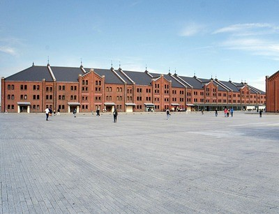
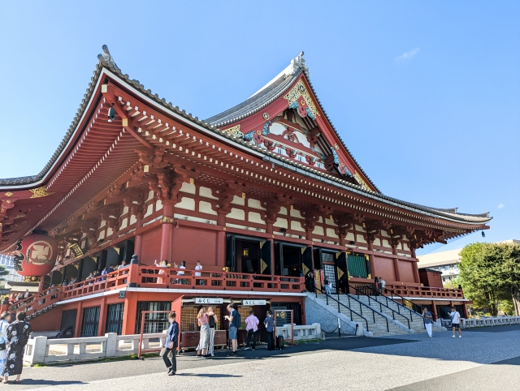

東京スカイツリー

東京スカイツリーは、2012年に開業した高さ634メートルの電波塔です。世界有数の高さを誇り、地上350メートルと450メートルの2つの展望台から東京の広大な景色が一望できます。夜には美しいライトアップが施され、ショッピングモールや水族館も併設されているため、一日中楽しめる人気スポットです。
住所：〒131-8634 東京都墨田区押上1丁目1-2
横浜赤レンガ倉庫

横浜赤レンガ倉庫は、明治末期から大正初期に建てられた歴史的なレンガ造りの建物です。かつては倉庫として使用されていましたが、現在はショッピングモールやレストラン、イベントスペースなど多目的に利用されています。レトロな雰囲気と現代的な施設が融合し、多くの観光客や地元の人々に親しまれています。
住所：〒231-0001 神奈川県横浜市中区新港１丁目１
浅草寺

浅草寺（せんそうじ）は、628年に創建されたと伝えられる日本最古級の仏教寺院です。本尊は聖観音菩薩で、古くから観音信仰の中心地として多くの人々に親しまれています。雷門や仲見世通りなど見どころも豊富で、年間を通じて国内外から多くの参拝者や観光客が訪れます。歴史や伝統文化を感じられる名所です。
住所：〒111-0032 東京都台東区浅草２丁目３−１
サイトURL：https://www.senso-ji.jp/